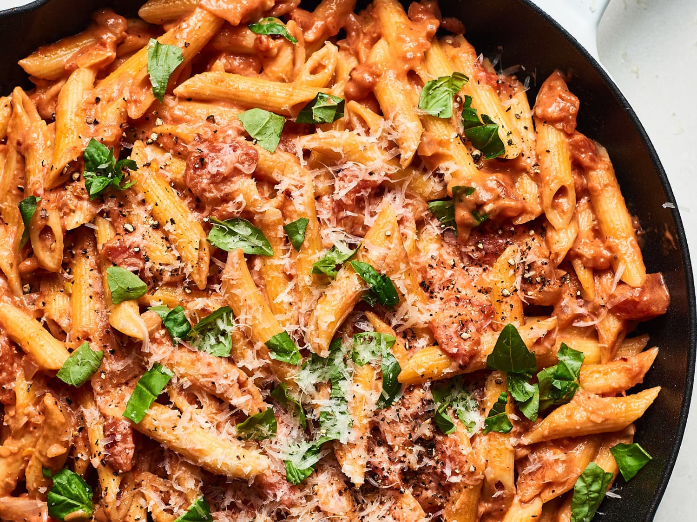

Creamy Tomato Pasta Bake

A quick creamy tomato sauce, tender noodles topped with lots of cheese; this pasta bake casseroles is a cinch to put together.
Check out our veggie pasta bake with juicy chopped tomatoes, nutty parmesan and creamy mozzarella.
This super simple recipe is ready in less than an hour, an easy mid-week filler for all the family
Ingredients
- 50g Butter
- 2 cloves garlic,crushed
- 1 Onion, grated
- 2 x 400g tins chopped tomatoes
- 1 tsp brown sugar
- a small bunch basil, chopped
- 250g rigatoni
- 100ml double cream
- 50g parmesan (or veggie alternative), finely grated
- 2 x 125g balls mozzarella, drained and cut into 2cm dice
- green salad, to serve
Method
- Heat the butter in a large pan and cook the garlic and onion over a low heat for 10 minutes or until really soft. Add the tomatoes and sugar, then cook for 20 minutes or until thickened and reduced by a third. Stir in the basil and season.
- Cook the rigatoni following pack instructions, then drain really well.
- Heat the oven to 200C/fan 180C/gas 6. Stir the double cream into the tomato sauce, followed by the parmesan, rigatoni and mozzarella.
- Tip into a buttered 20cm x 30cm baking dish and bake for 10 minutes or until bubbling. Serve with a green salad, if you like.
Tip For Success
- Use finely shredded mozzarella cheese so it melts quickly and evenly.
- To brown the cheese, broil for 2-3 minutes or until bubbly.